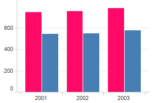

Sistema Integral de la Informacion
Academica Administrativa
El SIIAA es un servicio que permite a todos los tecnológicos de México tener un registro de todos sus trabajadores junto con todos sus documentos oficiales para un buen,anejo de la informacion. Así como tambien realizar encuestas propias del tecnológico para mejorar el desempeño de todos y cada uno de los miembros de la familia del TEC.
